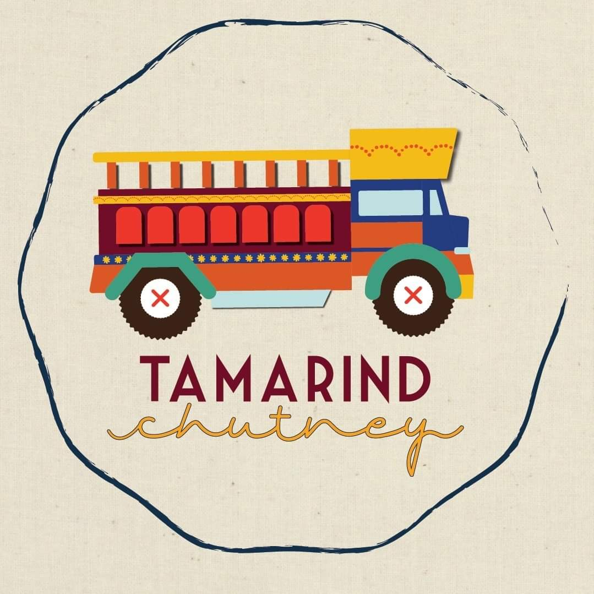
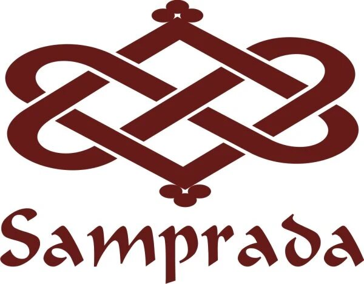

How's the products and compaies
You will find small description of the companies and their products.
Clothing
BYHAND
BYHAND believe in “Traditional Wear in a Contemporary Style”. We have started a movement that helps promote a socially conscious lifestyle. All our apparel is refreshingly simply and celebrates Indian Craft. Every woman defines herself through her own personal style. BYHAND is for people who are conscious about the choices they make. Our products are all designed with the idea to make the wearer proud and to feel good about themselves. This feel-good-factor comes from knowing that BYHAND is on a mission to enable sustainable livelihoods for artisans by eliminating the middleman.

Tamarind Chutney
Sassy, feminist clothing brand committed to equity and sustainability. We are committed to preserving India’s rich craft heritage and working with artisans to ensure meaningful improvement in their livelihoods.

Samprada
Samprada started out as a modest effort to make great functional pieces of women’s clothing using beautiful, traditional Indian fabrics. We make pieces you can feel good about buying and wearing frequently. It’s an effort at sustainable styles that uphold India’s rich textile heritage and promote a healthy relationship with your closet.
Jewelry
Flourish
Flourish was started with a simple purpose: to be a driving force of conscious consumption, making socially and environmentally sustainable products from around the world available to everyone. Our values are at the center of everything that we do, to ensure that everyone in the supply chain from creator to consumer is celebrated and informed. By bringing together craft stories, honest value and positive impact, everything here comes with a mark of goodness, and the hope that we can create a world where we can all flourish.
HandmadeJoy
Handmade Joy® is all in one e-commerce which promotes and sells products that are in use on daily purpose. Not only that our vision also takes good care of each age group in the term of products and availability of products. The interest of our customers are always the top priority for us, so we hope you will enjoy our products as much as we enjoy making them available to you.
TEEJH
TEEJH is a simple yet strong identity of all women across the globe! It is a celebration of Womanhood & its stunning avatars, beautifully expressed through our exquisite pieces of Jewelry! TEEJH is an Ethnic Jewelry brand fully owned by its sister concern JOKER AND WITCH
Footwear

DomainShoes
Modello Domani specializes in handcrafted premium footwear. We aim at bringing international designs at domestic prices; going easy on the pocket yet high on style and comfort. We offer a wide variety of products for men & women ranging from hand woven leather moccasins, velvet moccasins, heels, flats, boots and brogues.
DmoDot
The dot is life itself, and dmodot hatched from the dot -- its ever evolving nature, its permanence. Founded in 2014, dmodot (read as d-m-o-dot) was earlier Dameriino and birthed from our love of handcrafted leather footwear. Like the dot, the brand has evolved to ease in subtlety with style. Like the dot, the simplicity of the dmodot shoe stands out. It’s alive, never distracting. At dmodot, we truly care about each and every pair of handmade shoe and our customers who choose to buy them. We know that great quality will make you happy, and we take pride in the high quality of our material, construction, and comfort.
TheroyalPeacock
We set out to create not just a fashion brand, but a brand inspired by the ultimate sophistication of a royal lifestyle, a brand that exists to serve the most refined, polished and well-bred ladies and gentlemen of our time! We started this brand to create simple designed, well made and well-priced shoes, the products that we would love but couldn't find.